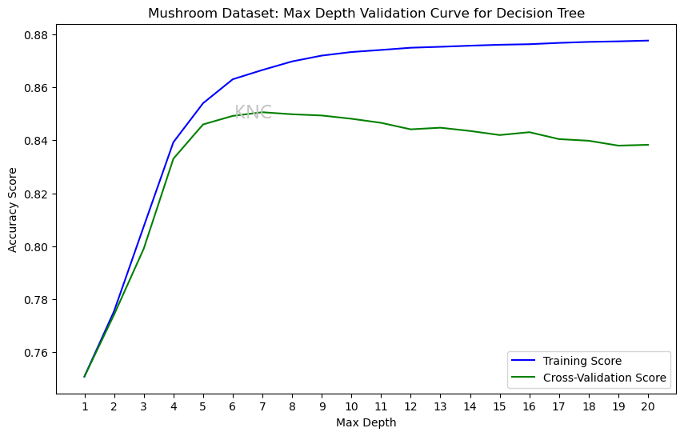
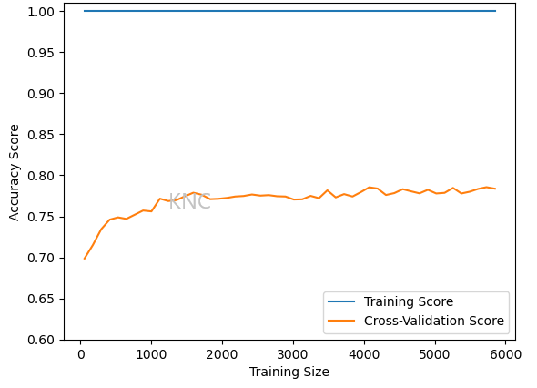
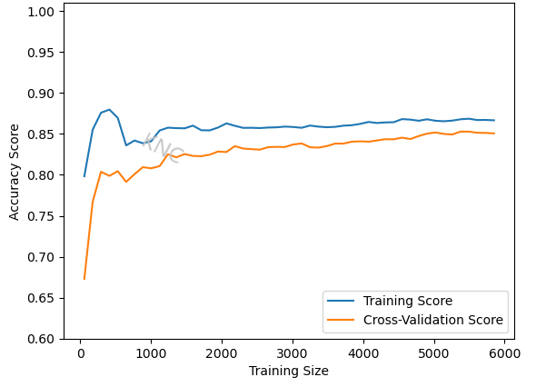
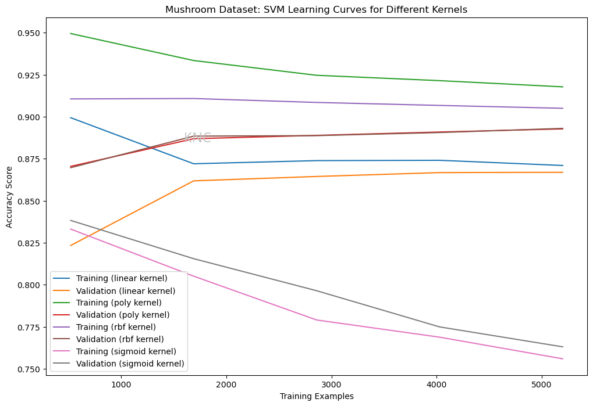

One of the challenges of supervised learning and machine learning in general is choosing the optimal hyperparameter values for a given algorithm. While grid searches can be useful in finding appropriate hyperparameter values, they are computationally expensive and do not isolate the effects of individual hyperparameters. Therefore, validation curves can be used to evaluate the performance of a model on certain values for an individual hyperparameter. Validation curves take the performance metric on the y-axis and the hyperparameter on the x-axis. It is important to note that other hyperparameters should be kept the same and both training and cross-validation sets should be plotted. The assumption is that the cross-validation set will indicate how these hyperparameter values will perform on the test set.
Using the UCI Mushroom Dataset with added noise, as well as scikit-learn's DecisionTreeClassifier, we can compare the accuracy of the training and cross-validation sets for different max-depth values. In scikit-learn's implementation, the default max-depth is None. In the plot below, we can see that, while the accuracy of the training score increases for all values checked, the cross-validation score rises before beginning to decrease after hitting a max-depth of 7. This indicates that larger max-depth values begin to cause overfitting, as the training score improves but the validation score does not. Decreasing max depth reduces overfit because the trees no longer grow to learn the training set perfectly, allowing for better generalization.
In order to further combat overfitting, a validation curve for min samples split can be evaluated to determine the ideal value for that hyperparameter. Increasing min samples split means that fewer splits will occur because more samples will be needed to split. Therefore, increasing min samples split will also reduce overfit.
An important concept in the supervised learning is the trade-off betweeen bias and variance. Bias is the amount of error that exists in representing the underlying data. Variance is the ability of the model to generalize to unseen data. The goal is to find a model that minimizes both bias and variance in order to facilitate a high scoring model. This concept is important when analyzing learning curves.
Below, the original learning curve for the DecisionTreeClassifier on the Mushroom dataset is shown. The training set has been learned perfectly, while the validation set has poor accuracy. This indicates that the model is overfit to the training data and not generalizing well.
As discussed in the validation curve section, decreasing the max depth from none to 7 and increasing the min samples split results in a more shallow tree with less splits, which helps to prevent overfitting. The resulting final learning curve shows that the training set is no longer learned perfectly, allowing for better generalization. Additionally, the final model showed a noticeable improvement in accuracy over the default model, from 79.14% to 84.31%. Note that because the error is still relatively high for both the training and validation sets, this model probably has high bias. Specifically, the last plot had high variance, and this plot has high bias. We can address high bias by choosing a more complicated model. In this case, a decision tree is probably too simple, so a more complicated method like a neural network or boosted decision tree might help.
It is important to note that a model that appears less overfit will not always result in better performance, but tuning hyperparameters based on validation curves usually improves model performance over the baseline.
Categorical hyperparameters, such as kernels for SVMs or solvers for neural networks can be compared via their learning curves, as shown in the figure below. Looking for the highest performing validation set curve would be a reasonable approach. For example, the green and purple curves represent training sets, but the brown and red curves represent validation sets. Therefore, the poly kernal or rbf kernal would probably be best in this scenario.
Written by Kailey Cozart in May, 2024.